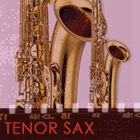
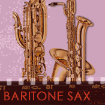

The saxophone family contains a number of progressively larger (and lower-pitched) acoustic instruments that are made of metal, use a single reed to create a vibration, and use a mechanism to cover and uncover the holes in the instrument's tube. They all share a common sound, although each has a distinct character.
 Soprano
saxophone (aka Soprano Sax)
Soprano
saxophone (aka Soprano Sax)
The soprano sax is the highest-pitched instrument of the sax family. Specifically, it is pitched in Bb (when the soprano sax plays its written pitch 'C,' it actually sounds the pitch 'Bb'). This difference between written and sounded pitches is called a 'transposition' and it enables the instrument to more easily perform in certain ways than if it were a 'non-transposing' instrument (like the bass, guitar, tuba who all sound the pitch as written).
Watch and listen to Branford Marsalis perform on the soprano sax. Watch and listen to the example.
 Alto saxophone
(aka Alto Sax)
Alto saxophone
(aka Alto Sax)
The alto sax is larger and lower-pitched than the soprano sax and is pitched in 'Eb.'
Watch and listen to Paquito D'Rivera perform on the alto sax. Watch and listen to the example.
Tenor saxophone (aka Tenor Sax)The tenor sax is pitched in 'Bb,' an octave below the soprano sax.
Watch and listen to tenor saxophonist John Coltrane perform "So What." Watch and listen to the example.
Baritone saxophone (aka Baritone Sax, Bari Sax)The baritone sax is pitched in 'Eb,' an octave below the alto sax.
Watch and listen to bari saxophonist Gerry Mulligan perform "Fine & Mellow." Watch and listen to the example.